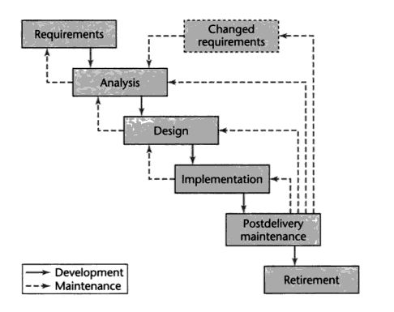
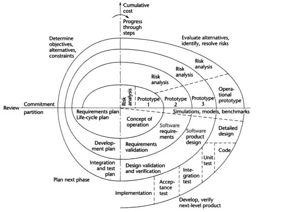

Software Engineering is the set of practices that are followed to create software. Software development goes through a set of phases until software retirement which is called the Software Development Life Cycle. There are several different models of the Software Development Life Cycle, used based on the application domain. A few of these models will be discussed here.
Each of the Software Development Life Cycle Models described cover the basic phases of software development.
The Waterfall Model is probably the most common and most widely used Software Development Life Cycle. Software Engineers that follow this life cycle model follow the following steps in order.

The problem with this model is that it is difficult to respond to the change in requirements that is likely to happen throughout the project. Each iteration of the waterfall model is fairly rigid and not flexible when it comes to customer demands.
The spiral model is an iterative twist on the waterfall model. The model contains the same steps as the waterfall model, but after each step a risk analysis is completed and a prototype is created. The creation of prototypes helps to mitigate risks involved in software development.

Over time software engineers decided to improve existing software development lifecycle models. Recently the idea of improving value to the customer through shorter development calendars has come into existance. These models are known for the ability to change according to the application domain and customer needs. The basic methodologies follow these four basic principles:
These methodologies will be covered in depth during the span of this course.
Sources:
Beck, K., M. Beedle, A. Van Bennekum, A. Cockburn, W. Cunningham, M. Fowler, et al. Manifesto for Agile Software Development. 2001. 12 Feb. 2009 <http://www.agilemanifesto.org>.
Schach, Stephen R. "Software Life-Cycle Models." Object-Oriented and Classical Software Engineering. 7th ed. New York: McGraw-Hill Science, Engineering & Mathematics, 2006. 51-63.